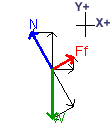
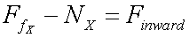
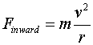
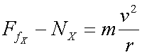

 Look at the FBD shown on the left. You should see only two forces acting in the X-direction. A component of N acts in the negative X direction while a component of Ff acts in the positive direction. This leads to the equation:
But, Finward plays an important role here - it must be the force producing the centripetal acceleration of the car so:
 which implies that
